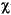

java.lang.String
java.lang.String
|
JavaTM 2 Platform Std. Ed. v1.4.2 |
||||||||||
| PREV CLASS NEXT CLASS | FRAMES NO FRAMES All Classes | ||||||||||
| SUMMARY: NESTED | FIELD | CONSTR | METHOD | DETAIL: FIELD | CONSTR | METHOD | ||||||||||
java.lang.Object
The String class represents character strings. All
string literals in Java programs, such as "abc", are
implemented as instances of this class.
Strings are constant; their values cannot be changed after they are created. String buffers support mutable strings. Because String objects are immutable they can be shared. For example:
String str = "abc";
is equivalent to:
char data[] = {'a', 'b', 'c'};
String str = new String(data);
Here are some more examples of how strings can be used:
System.out.println("abc");
String cde = "cde";
System.out.println("abc" + cde);
String c = "abc".substring(2,3);
String d = cde.substring(1, 2);
The class String includes methods for examining
individual characters of the sequence, for comparing strings, for
searching strings, for extracting substrings, and for creating a
copy of a string with all characters translated to uppercase or to
lowercase. Case mapping relies heavily on the information provided
by the Unicode Consortium's Unicode 3.0 specification. The
specification's UnicodeData.txt and SpecialCasing.txt files are
used extensively to provide case mapping.
The Java language provides special support for the string
concatenation operator ( + ), and for conversion of
other objects to strings. String concatenation is implemented
through the StringBuffer class and its
append method.
String conversions are implemented through the method
toString, defined by Object and
inherited by all classes in Java. For additional information on
string concatenation and conversion, see Gosling, Joy, and Steele,
The Java Language Specification.
Unless otherwise noted, passing a null argument to a constructor
or method in this class will cause a NullPointerException to be
thrown.
Object.toString(),
StringBuffer,
StringBuffer.append(boolean),
StringBuffer.append(char),
StringBuffer.append(char[]),
StringBuffer.append(char[], int, int),
StringBuffer.append(double),
StringBuffer.append(float),
StringBuffer.append(int),
StringBuffer.append(long),
StringBuffer.append(java.lang.Object),
StringBuffer.append(java.lang.String),
Charset,
Serialized Form| Field Summary | |
static Comparator |
CASE_INSENSITIVE_ORDER
A Comparator that orders String objects as by
compareToIgnoreCase. |
| Constructor Summary | |
String()
Initializes a newly created String object so that it
represents an empty character sequence. |
|
String(byte[] bytes)
Constructs a new String by decoding the specified array of bytes using the platform's default charset. |
|
String(byte[] ascii,
int hibyte)
Deprecated. This method does not properly convert bytes into characters. As of JDK 1.1, the preferred way to do this is via the String constructors that take a charset name or
that use the platform's default charset. |
|
String(byte[] bytes,
int offset,
int length)
Constructs a new String by decoding the specified subarray of bytes using the platform's default charset. |
|
String(byte[] ascii,
int hibyte,
int offset,
int count)
Deprecated. This method does not properly convert bytes into characters. As of JDK 1.1, the preferred way to do this is via the String constructors that take a charset name or that use
the platform's default charset. |
|
String(byte[] bytes,
int offset,
int length,
String charsetName)
Constructs a new String by decoding the specified subarray of bytes using the specified charset. |
|
String(byte[] bytes,
String charsetName)
Constructs a new String by decoding the specified array of bytes using the specified charset. |
|
String(char[] value)
Allocates a new String so that it represents the
sequence of characters currently contained in the character array
argument. |
|
String(char[] value,
int offset,
int count)
Allocates a new String that contains characters from
a subarray of the character array argument. |
|
String(String original)
Initializes a newly created String object so that it
represents the same sequence of characters as the argument; in other
words, the newly created string is a copy of the argument string. |
|
String(StringBuffer buffer)
Allocates a new string that contains the sequence of characters currently contained in the string buffer argument. |
|
| Method Summary | |
char |
charAt(int index)
Returns the character at the specified index. |
int |
compareTo(Object o)
Compares this String to another Object. |
int |
compareTo(String anotherString)
Compares two strings lexicographically. |
int |
compareToIgnoreCase(String str)
Compares two strings lexicographically, ignoring case differences. |
String |
concat(String str)
Concatenates the specified string to the end of this string. |
boolean |
contentEquals(StringBuffer sb)
Returns true if and only if this String represents the same sequence of characters as the specified StringBuffer. |
static String |
copyValueOf(char[] data)
Returns a String that represents the character sequence in the array specified. |
static String |
copyValueOf(char[] data,
int offset,
int count)
Returns a String that represents the character sequence in the array specified. |
boolean |
endsWith(String suffix)
Tests if this string ends with the specified suffix. |
boolean |
equals(Object anObject)
Compares this string to the specified object. |
boolean |
equalsIgnoreCase(String anotherString)
Compares this String to another String,
ignoring case considerations. |
byte[] |
getBytes()
Encodes this String into a sequence of bytes using the platform's default charset, storing the result into a new byte array. |
void |
getBytes(int srcBegin,
int srcEnd,
byte[] dst,
int dstBegin)
Deprecated. This method does not properly convert characters into bytes. As of JDK 1.1, the preferred way to do this is via the the getBytes() method, which uses the platform's default
charset. |
byte[] |
getBytes(String charsetName)
Encodes this String into a sequence of bytes using the named charset, storing the result into a new byte array. |
void |
getChars(int srcBegin,
int srcEnd,
char[] dst,
int dstBegin)
Copies characters from this string into the destination character array. |
int |
hashCode()
Returns a hash code for this string. |
int |
indexOf(int ch)
Returns the index within this string of the first occurrence of the specified character. |
int |
indexOf(int ch,
int fromIndex)
Returns the index within this string of the first occurrence of the specified character, starting the search at the specified index. |
int |
indexOf(String str)
Returns the index within this string of the first occurrence of the specified substring. |
int |
indexOf(String str,
int fromIndex)
Returns the index within this string of the first occurrence of the specified substring, starting at the specified index. |
String |
intern()
Returns a canonical representation for the string object. |
int |
lastIndexOf(int ch)
Returns the index within this string of the last occurrence of the specified character. |
int |
lastIndexOf(int ch,
int fromIndex)
Returns the index within this string of the last occurrence of the specified character, searching backward starting at the specified index. |
int |
lastIndexOf(String str)
Returns the index within this string of the rightmost occurrence of the specified substring. |
int |
lastIndexOf(String str,
int fromIndex)
Returns the index within this string of the last occurrence of the specified substring, searching backward starting at the specified index. |
int |
length()
Returns the length of this string. |
boolean |
matches(String regex)
Tells whether or not this string matches the given regular expression. |
boolean |
regionMatches(boolean ignoreCase,
int toffset,
String other,
int ooffset,
int len)
Tests if two string regions are equal. |
boolean |
regionMatches(int toffset,
String other,
int ooffset,
int len)
Tests if two string regions are equal. |
String |
replace(char oldChar,
char newChar)
Returns a new string resulting from replacing all occurrences of oldChar in this string with newChar. |
String |
replaceAll(String regex,
String replacement)
Replaces each substring of this string that matches the given regular expression with the given replacement. |
String |
replaceFirst(String regex,
String replacement)
Replaces the first substring of this string that matches the given regular expression with the given replacement. |
String[] |
split(String regex)
Splits this string around matches of the given regular expression. |
String[] |
split(String regex,
int limit)
Splits this string around matches of the given regular expression. |
boolean |
startsWith(String prefix)
Tests if this string starts with the specified prefix. |
boolean |
startsWith(String prefix,
int toffset)
Tests if this string starts with the specified prefix beginning a specified index. |
CharSequence |
subSequence(int beginIndex,
int endIndex)
Returns a new character sequence that is a subsequence of this sequence. |
String |
substring(int beginIndex)
Returns a new string that is a substring of this string. |
String |
substring(int beginIndex,
int endIndex)
Returns a new string that is a substring of this string. |
char[] |
toCharArray()
Converts this string to a new character array. |
String |
toLowerCase()
Converts all of the characters in this String to lower
case using the rules of the default locale. |
String |
toLowerCase(Locale locale)
Converts all of the characters in this String to lower
case using the rules of the given Locale. |
String |
toString()
This object (which is already a string!) is itself returned. |
String |
toUpperCase()
Converts all of the characters in this String to upper
case using the rules of the default locale. |
String |
toUpperCase(Locale locale)
Converts all of the characters in this String to upper
case using the rules of the given Locale. |
String |
trim()
Returns a copy of the string, with leading and trailing whitespace omitted. |
static String |
valueOf(boolean b)
Returns the string representation of the boolean argument. |
static String |
valueOf(char c)
Returns the string representation of the char
argument. |
static String |
valueOf(char[] data)
Returns the string representation of the char array
argument. |
static String |
valueOf(char[] data,
int offset,
int count)
Returns the string representation of a specific subarray of the char array argument. |
static String |
valueOf(double d)
Returns the string representation of the double argument. |
static String |
valueOf(float f)
Returns the string representation of the float argument. |
static String |
valueOf(int i)
Returns the string representation of the int argument. |
static String |
valueOf(long l)
Returns the string representation of the long argument. |
static String |
valueOf(Object obj)
Returns the string representation of the Object argument. |
| Methods inherited from class java.lang.Object |
clone, finalize, getClass, notify, notifyAll, wait, wait, wait |
| Field Detail |
public static final Comparator CASE_INSENSITIVE_ORDER
String objects as by
compareToIgnoreCase. This comparator is serializable.
Note that this Comparator does not take locale into account, and will result in an unsatisfactory ordering for certain locales. The java.text package provides Collators to allow locale-sensitive ordering.
Collator.compare(String, String)| Constructor Detail |
public String()
String object so that it
represents an empty character sequence. Note that use of this
constructor is unnecessary since Strings are immutable.
public String(String original)
String object so that it
represents the same sequence of characters as the argument; in other
words, the newly created string is a copy of the argument string. Unless
an explicit copy of original is needed, use of this
constructor is unnecessary since Strings are immutable.
original - a String.public String(char[] value)
String so that it represents the
sequence of characters currently contained in the character array
argument. The contents of the character array are copied; subsequent
modification of the character array does not affect the newly created
string.
value - the initial value of the string.public String(char[] value,
int offset,
int count)
String that contains characters from
a subarray of the character array argument. The offset
argument is the index of the first character of the subarray and
the count argument specifies the length of the
subarray. The contents of the subarray are copied; subsequent
modification of the character array does not affect the newly
created string.
value - array that is the source of characters.offset - the initial offset.count - the length.
IndexOutOfBoundsException - if the offset
and count arguments index characters outside
the bounds of the value array.public String(byte[] ascii,
int hibyte,
int offset,
int count)
String constructors that take a charset name or that use
the platform's default charset.
String constructed from a subarray
of an array of 8-bit integer values.
The offset argument is the index of the first byte
of the subarray, and the count argument specifies the
length of the subarray.
Each byte in the subarray is converted to a
char as specified in the method above.
ascii - the bytes to be converted to characters.hibyte - the top 8 bits of each 16-bit Unicode character.offset - the initial offset.count - the length.
IndexOutOfBoundsException - if the offset
or count argument is invalid.String(byte[], int),
String(byte[], int, int, java.lang.String),
String(byte[], int, int),
String(byte[], java.lang.String),
String(byte[])public String(byte[] ascii,
int hibyte)
String constructors that take a charset name or
that use the platform's default charset.
String containing characters
constructed from an array of 8-bit integer values. Each character
cin the resulting string is constructed from the
corresponding component b in the byte array such that:
c == (char)(((hibyte & 0xff) << 8)
| (b & 0xff))
ascii - the bytes to be converted to characters.hibyte - the top 8 bits of each 16-bit Unicode character.String(byte[], int, int, java.lang.String),
String(byte[], int, int),
String(byte[], java.lang.String),
String(byte[])public String(byte[] bytes,
int offset,
int length,
String charsetName)
throws UnsupportedEncodingException
The behavior of this constructor when the given bytes are not valid
in the given charset is unspecified. The CharsetDecoder class should be used when more control
over the decoding process is required.
bytes - the bytes to be decoded into charactersoffset - the index of the first byte to decodelength - the number of bytes to decodecharsetName - the name of a supported
UnsupportedEncodingException - if the named charset is not supported
IndexOutOfBoundsException - if the offset and length arguments
index characters outside the bounds of the bytes
arraypublic String(byte[] bytes,
String charsetName)
throws UnsupportedEncodingException
The behavior of this constructor when the given bytes are not valid
in the given charset is unspecified. The CharsetDecoder class should be used when more control
over the decoding process is required.
bytes - the bytes to be decoded into characterscharsetName - the name of a supported
UnsupportedEncodingException - If the named charset is not supportedpublic String(byte[] bytes,
int offset,
int length)
The behavior of this constructor when the given bytes are not valid
in the default charset is unspecified. The CharsetDecoder class should be used when more control
over the decoding process is required.
bytes - the bytes to be decoded into charactersoffset - the index of the first byte to decodelength - the number of bytes to decode
IndexOutOfBoundsException - if the offset and the length
arguments index characters outside the bounds of the
bytes arraypublic String(byte[] bytes)
The behavior of this constructor when the given bytes are not valid
in the default charset is unspecified. The CharsetDecoder class should be used when more control
over the decoding process is required.
bytes - the bytes to be decoded into characterspublic String(StringBuffer buffer)
buffer - a StringBuffer.| Method Detail |
public int length()
length in interface CharSequencepublic char charAt(int index)
0 to length() - 1. The first character
of the sequence is at index 0, the next at index
1, and so on, as for array indexing.
charAt in interface CharSequenceindex - the index of the character.
0.
IndexOutOfBoundsException - if the index
argument is negative or not less than the length of this
string.public void getChars(int srcBegin,
int srcEnd,
char[] dst,
int dstBegin)
The first character to be copied is at index srcBegin;
the last character to be copied is at index srcEnd-1
(thus the total number of characters to be copied is
srcEnd-srcBegin). The characters are copied into the
subarray of dst starting at index dstBegin
and ending at index:
dstbegin + (srcEnd-srcBegin) - 1
srcBegin - index of the first character in the string
to copy.srcEnd - index after the last character in the string
to copy.dst - the destination array.dstBegin - the start offset in the destination array.
IndexOutOfBoundsException - If any of the following
is true:
srcBegin is negative.
srcBegin is greater than srcEnd
srcEnd is greater than the length of this
string
dstBegin is negative
dstBegin+(srcEnd-srcBegin) is larger than
dst.lengthpublic void getBytes(int srcBegin,
int srcEnd,
byte[] dst,
int dstBegin)
getBytes() method, which uses the platform's default
charset.
The first character to be copied is at index srcBegin;
the last character to be copied is at index srcEnd-1.
The total number of characters to be copied is
srcEnd-srcBegin. The characters, converted to bytes,
are copied into the subarray of dst starting at index
dstBegin and ending at index:
dstbegin + (srcEnd-srcBegin) - 1
srcBegin - index of the first character in the string
to copy.srcEnd - index after the last character in the string
to copy.dst - the destination array.dstBegin - the start offset in the destination array.
IndexOutOfBoundsException - if any of the following
is true:
srcBegin is negative
srcBegin is greater than srcEnd
srcEnd is greater than the length of this
String
dstBegin is negative
dstBegin+(srcEnd-srcBegin) is larger than
dst.lengthpublic byte[] getBytes(String charsetName)
throws UnsupportedEncodingException
The behavior of this method when this string cannot be encoded in
the given charset is unspecified. The CharsetEncoder class should be used when more control
over the encoding process is required.
charsetName - the name of a supported
UnsupportedEncodingException - If the named charset is not supportedpublic byte[] getBytes()
The behavior of this method when this string cannot be encoded in
the default charset is unspecified. The CharsetEncoder class should be used when more control
over the encoding process is required.
public boolean equals(Object anObject)
true if and only if the argument is not
null and is a String object that represents
the same sequence of characters as this object.
equals in class ObjectanObject - the object to compare this String
against.
true if the String are equal;
false otherwise.compareTo(java.lang.String),
equalsIgnoreCase(java.lang.String)public boolean contentEquals(StringBuffer sb)
sb - the StringBuffer to compare to.
public boolean equalsIgnoreCase(String anotherString)
String to another String,
ignoring case considerations. Two strings are considered equal
ignoring case if they are of the same length, and corresponding
characters in the two strings are equal ignoring case.
Two characters c1 and c2 are considered
the same, ignoring case if at least one of the following is true:
== operator).
Character.toUpperCase(char)
to each character produces the same result.
Character.toLowerCase(char)
to each character produces the same result.
anotherString - the String to compare this
String against.
true if the argument is not null
and the Strings are equal,
ignoring case; false otherwise.equals(Object),
Character.toLowerCase(char),
Character.toUpperCase(char)public int compareTo(String anotherString)
String object is compared lexicographically to the
character sequence represented by the argument string. The result is
a negative integer if this String object
lexicographically precedes the argument string. The result is a
positive integer if this String object lexicographically
follows the argument string. The result is zero if the strings
are equal; compareTo returns 0 exactly when
the equals(Object) method would return true.
This is the definition of lexicographic ordering. If two strings are
different, then either they have different characters at some index
that is a valid index for both strings, or their lengths are different,
or both. If they have different characters at one or more index
positions, let k be the smallest such index; then the string
whose character at position k has the smaller value, as
determined by using the < operator, lexicographically precedes the
other string. In this case, compareTo returns the
difference of the two character values at position k in
the two string -- that is, the value:
If there is no index position at which they differ, then the shorter string lexicographically precedes the longer string. In this case,this.charAt(k)-anotherString.charAt(k)
compareTo returns the difference of the lengths of the
strings -- that is, the value:
this.length()-anotherString.length()
anotherString - the String to be compared.
0 if the argument string is equal to
this string; a value less than 0 if this string
is lexicographically less than the string argument; and a
value greater than 0 if this string is
lexicographically greater than the string argument.public int compareTo(Object o)
compareTo(String). Otherwise,
it throws a ClassCastException (as Strings are comparable
only to other Strings).
compareTo in interface Comparableo - the Object to be compared.
0 if the argument is a string
lexicographically equal to this string; a value less than
0 if the argument is a string lexicographically
greater than this string; and a value greater than
0 if the argument is a string lexicographically
less than this string.
ClassCastExceptionString.Comparablepublic int compareToIgnoreCase(String str)
compareTo with normalized versions of the strings
where case differences have been eliminated by calling
Character.toLowerCase(Character.toUpperCase(character)) on
each character.
Note that this method does not take locale into account, and will result in an unsatisfactory ordering for certain locales. The java.text package provides collators to allow locale-sensitive ordering.
str - the String to be compared.
Collator.compare(String, String)public boolean regionMatches(int toffset,
String other,
int ooffset,
int len)
A substring of this String object is compared to a substring of the argument other. The result is true if these substrings represent identical character sequences. The substring of this String object to be compared begins at index toffset and has length len. The substring of other to be compared begins at index ooffset and has length len. The result is false if and only if at least one of the following is true:
toffset - the starting offset of the subregion in this string.other - the string argument.ooffset - the starting offset of the subregion in the string
argument.len - the number of characters to compare.
true if the specified subregion of this string
exactly matches the specified subregion of the string argument;
false otherwise.public boolean regionMatches(boolean ignoreCase,
int toffset,
String other,
int ooffset,
int len)
A substring of this String object is compared to a substring of the argument other. The result is true if these substrings represent character sequences that are the same, ignoring case if and only if ignoreCase is true. The substring of this String object to be compared begins at index toffset and has length len. The substring of other to be compared begins at index ooffset and has length len. The result is false if and only if at least one of the following is true:
this.charAt(toffset+k) != other.charAt(ooffset+k)
Character.toLowerCase(this.charAt(toffset+k)) !=
Character.toLowerCase(other.charAt(ooffset+k))
Character.toUpperCase(this.charAt(toffset+k)) !=
Character.toUpperCase(other.charAt(ooffset+k))
ignoreCase - if true, ignore case when comparing
characters.toffset - the starting offset of the subregion in this
string.other - the string argument.ooffset - the starting offset of the subregion in the string
argument.len - the number of characters to compare.
true if the specified subregion of this string
matches the specified subregion of the string argument;
false otherwise. Whether the matching is exact
or case insensitive depends on the ignoreCase
argument.public boolean startsWith(String prefix,
int toffset)
prefix - the prefix.toffset - where to begin looking in the string.
true if the character sequence represented by the
argument is a prefix of the substring of this object starting
at index toffset; false otherwise.
The result is false if toffset is
negative or greater than the length of this
String object; otherwise the result is the same
as the result of the expression
this.subString(toffset).startsWith(prefix)
public boolean startsWith(String prefix)
prefix - the prefix.
true if the character sequence represented by the
argument is a prefix of the character sequence represented by
this string; false otherwise.
Note also that true will be returned if the
argument is an empty string or is equal to this
String object as determined by the
equals(Object) method.public boolean endsWith(String suffix)
suffix - the suffix.
true if the character sequence represented by the
argument is a suffix of the character sequence represented by
this object; false otherwise. Note that the
result will be true if the argument is the
empty string or is equal to this String object
as determined by the equals(Object) method.public int hashCode()
String object is computed as
usings[0]*31^(n-1) + s[1]*31^(n-2) + ... + s[n-1]
int arithmetic, where s[i] is the
ith character of the string, n is the length of
the string, and ^ indicates exponentiation.
(The hash value of the empty string is zero.)
hashCode in class ObjectObject.equals(java.lang.Object),
Hashtablepublic int indexOf(int ch)
ch occurs
in the character sequence represented by this String
object, then the index of the first such occurrence is returned --
that is, the smallest value k such that:
isthis.charAt(k) == ch
true. If no such character occurs in this string,
then -1 is returned.
ch - a character.
-1 if the character does not occur.public int indexOf(int ch,
int fromIndex)
If a character with value ch occurs in the character
sequence represented by this String object at an index
no smaller than fromIndex, then the index of the first
such occurrence is returned--that is, the smallest value k
such that:
is true. If no such character occurs in this string at or after position(this.charAt(k) == ch) && (k >= fromIndex)
fromIndex, then -1 is returned.
There is no restriction on the value of fromIndex. If it
is negative, it has the same effect as if it were zero: this entire
string may be searched. If it is greater than the length of this
string, it has the same effect as if it were equal to the length of
this string: -1 is returned.
ch - a character.fromIndex - the index to start the search from.
fromIndex, or -1
if the character does not occur.public int lastIndexOf(int ch)
is true. The String is searched backwards starting at the last character.this.charAt(k) == ch
ch - a character.
-1 if the character does not occur.public int lastIndexOf(int ch,
int fromIndex)
is true.this.charAt(k) == ch) && (k <= fromIndex)
ch - a character.fromIndex - the index to start the search from. There is no
restriction on the value of fromIndex. If it is
greater than or equal to the length of this string, it has
the same effect as if it were equal to one less than the
length of this string: this entire string may be searched.
If it is negative, it has the same effect as if it were -1:
-1 is returned.
fromIndex, or -1
if the character does not occur before that point.public int indexOf(String str)
isthis.startsWith(str, k)
true.
str - any string.
-1 is returned.public int indexOf(String str,
int fromIndex)
If no such value of k exists, then -1 is returned.k >= Math.min(fromIndex, str.length()) && this.startsWith(str, k)
str - the substring for which to search.fromIndex - the index from which to start the search.
public int lastIndexOf(String str)
this.length().
The returned index is the largest value k such that
is true.this.startsWith(str, k)
str - the substring to search for.
-1 is returned.public int lastIndexOf(String str,
int fromIndex)
If no such value of k exists, then -1 is returned.k <= Math.min(fromIndex, str.length()) && this.startsWith(str, k)
str - the substring to search for.fromIndex - the index to start the search from.
public String substring(int beginIndex)
Examples:
"unhappy".substring(2) returns "happy" "Harbison".substring(3) returns "bison" "emptiness".substring(9) returns "" (an empty string)
beginIndex - the beginning index, inclusive.
IndexOutOfBoundsException - if
beginIndex is negative or larger than the
length of this String object.public String substring(int beginIndex,
int endIndex)
beginIndex and
extends to the character at index endIndex - 1.
Thus the length of the substring is endIndex-beginIndex.
Examples:
"hamburger".substring(4, 8) returns "urge" "smiles".substring(1, 5) returns "mile"
beginIndex - the beginning index, inclusive.endIndex - the ending index, exclusive.
IndexOutOfBoundsException - if the
beginIndex is negative, or
endIndex is larger than the length of
this String object, or
beginIndex is larger than
endIndex.public CharSequence subSequence(int beginIndex,
int endIndex)
An invocation of this method of the form
behaves in exactly the same way as the invocationstr.subSequence(begin, end)
This method is defined so that the String class can implement thestr.substring(begin, end)
CharSequence interface.
subSequence in interface CharSequencebeginIndex - the begin index, inclusive.endIndex - the end index, exclusive.
IndexOutOfBoundsException - if beginIndex or endIndex are negative,
if endIndex is greater than length(),
or if beginIndex is greater than startIndexpublic String concat(String str)
If the length of the argument string is 0, then this
String object is returned. Otherwise, a new
String object is created, representing a character
sequence that is the concatenation of the character sequence
represented by this String object and the character
sequence represented by the argument string.
Examples:
"cares".concat("s") returns "caress"
"to".concat("get").concat("her") returns "together"
str - the String that is concatenated to the end
of this String.
public String replace(char oldChar,
char newChar)
oldChar in this string with newChar.
If the character oldChar does not occur in the
character sequence represented by this String object,
then a reference to this String object is returned.
Otherwise, a new String object is created that
represents a character sequence identical to the character sequence
represented by this String object, except that every
occurrence of oldChar is replaced by an occurrence
of newChar.
Examples:
"mesquite in your cellar".replace('e', 'o')
returns "mosquito in your collar"
"the war of baronets".replace('r', 'y')
returns "the way of bayonets"
"sparring with a purple porpoise".replace('p', 't')
returns "starring with a turtle tortoise"
"JonL".replace('q', 'x') returns "JonL" (no change)
oldChar - the old character.newChar - the new character.
oldChar with newChar.public boolean matches(String regex)
An invocation of this method of the form str.matches(regex) yields exactly the same result as the expression
Pattern.matches(regex, str)
regex - the regular expression to which this string is to be matched
PatternSyntaxException - if the regular expression's syntax is invalidPatternpublic String replaceFirst(String regex,
String replacement)
An invocation of this method of the form str.replaceFirst(regex, repl) yields exactly the same result as the expression
Pattern.compile(regex).matcher(str).replaceFirst(repl)
regex - the regular expression to which this string is to be matched
PatternSyntaxException - if the regular expression's syntax is invalidPatternpublic String replaceAll(String regex,
String replacement)
An invocation of this method of the form str.replaceAll(regex, repl) yields exactly the same result as the expression
Pattern.compile(regex).matcher(str).replaceAll(repl)
regex - the regular expression to which this string is to be matched
PatternSyntaxException - if the regular expression's syntax is invalidPatternpublic String[] split(String regex,
int limit)
The array returned by this method contains each substring of this string that is terminated by another substring that matches the given expression or is terminated by the end of the string. The substrings in the array are in the order in which they occur in this string. If the expression does not match any part of the input then the resulting array has just one element, namely this string.
The limit parameter controls the number of times the pattern is applied and therefore affects the length of the resulting array. If the limit n is greater than zero then the pattern will be applied at most n - 1 times, the array's length will be no greater than n, and the array's last entry will contain all input beyond the last matched delimiter. If n is non-positive then the pattern will be applied as many times as possible and the array can have any length. If n is zero then the pattern will be applied as many times as possible, the array can have any length, and trailing empty strings will be discarded.
The string "boo:and:foo", for example, yields the following results with these parameters:
Regex Limit Result : 2 { "boo", "and:foo" } : 5 { "boo", "and", "foo" } : -2 { "boo", "and", "foo" } o 5 { "b", "", ":and:f", "", "" } o -2 { "b", "", ":and:f", "", "" } o 0 { "b", "", ":and:f" }
An invocation of this method of the form str.split(regex, n) yields the same result as the expression
Pattern.compile(regex).split(str, n)
regex - the delimiting regular expressionlimit - the result threshold, as described above
PatternSyntaxException - if the regular expression's syntax is invalidPatternpublic String[] split(String regex)
This method works as if by invoking the two-argument split method with the given expression and a limit
argument of zero. Trailing empty strings are therefore not included in
the resulting array.
The string "boo:and:foo", for example, yields the following results with these expressions:
Regex Result : { "boo", "and", "foo" } o { "b", "", ":and:f" }
regex - the delimiting regular expression
PatternSyntaxException - if the regular expression's syntax is invalidPatternpublic String toLowerCase(Locale locale)
String to lower
case using the rules of the given Locale. Case mappings rely
heavily on the Unicode specification's character data. Since case
mappings are not always 1:1 char mappings, the resulting String
may be a different length than the original String.
Examples of lowercase mappings are in the following table:
| Language Code of Locale | Upper Case | Lower Case | Description |
|---|---|---|---|
| tr (Turkish) | \u0130 | \u0069 | capital letter I with dot above -> small letter i |
| tr (Turkish) | \u0049 | \u0131 | capital letter I -> small letter dotless i |
| (all) | French Fries | french fries | lowercased all chars in String |
| (all) |  

 |

 |
lowercased all chars in String |
locale - use the case transformation rules for this locale
String, converted to lowercase.toLowerCase(),
toUpperCase(),
toUpperCase(Locale)public String toLowerCase()
String to lower
case using the rules of the default locale. This is equivalent to calling
toLowerCase(Locale.getDefault()).
String, converted to lowercase.toLowerCase(Locale)public String toUpperCase(Locale locale)
String to upper
case using the rules of the given Locale. Case mappings rely
heavily on the Unicode specification's character data. Since case mappings
are not always 1:1 char mappings, the resulting String may
be a different length than the original String.
Examples of locale-sensitive and 1:M case mappings are in the following table.
| Language Code of Locale | Lower Case | Upper Case | Description |
|---|---|---|---|
| tr (Turkish) | \u0069 | \u0130 | small letter i -> capital letter I with dot above |
| tr (Turkish) | \u0131 | \u0049 | small letter dotless i -> capital letter I |
| (all) | \u00df | \u0053 \u0053 | small letter sharp s -> two letters: SS |
| (all) | Fahrvergnügen | FAHRVERGNÜGEN |
locale - use the case transformation rules for this locale
String, converted to uppercase.toUpperCase(),
toLowerCase(),
toLowerCase(Locale)public String toUpperCase()
String to upper
case using the rules of the default locale. This method is equivalent to
toUpperCase(Locale.getDefault()).
String, converted to uppercase.toUpperCase(Locale)public String trim()
If this String object represents an empty character
sequence, or the first and last characters of character sequence
represented by this String object both have codes
greater than '\u0020' (the space character), then a
reference to this String object is returned.
Otherwise, if there is no character with a code greater than
'\u0020' in the string, then a new
String object representing an empty string is created
and returned.
Otherwise, let k be the index of the first character in the
string whose code is greater than '\u0020', and let
m be the index of the last character in the string whose code
is greater than '\u0020'. A new String
object is created, representing the substring of this string that
begins with the character at index k and ends with the
character at index m-that is, the result of
this.substring(k, m+1).
This method may be used to trim
whitespace from the beginning and end
of a string; in fact, it trims all ASCII control characters as well.
public String toString()
toString in interface CharSequencetoString in class Objectpublic char[] toCharArray()
public static String valueOf(Object obj)
Object argument.
obj - an Object.
null, then a string equal to
"null"; otherwise, the value of
obj.toString() is returned.Object.toString()public static String valueOf(char[] data)
char array
argument. The contents of the character array are copied; subsequent
modification of the character array does not affect the newly
created string.
data - a char array.
public static String valueOf(char[] data,
int offset,
int count)
char array argument.
The offset argument is the index of the first
character of the subarray. The count argument
specifies the length of the subarray. The contents of the subarray
are copied; subsequent modification of the character array does not
affect the newly created string.
data - the character array.offset - the initial offset into the value of the
String.count - the length of the value of the String.
IndexOutOfBoundsException - if offset is
negative, or count is negative, or
offset+count is larger than
data.length.public static String copyValueOf(char[] data,
int offset,
int count)
data - the character array.offset - initial offset of the subarray.count - length of the subarray.
String that contains the characters of the
specified subarray of the character array.public static String copyValueOf(char[] data)
data - the character array.
String that contains the characters of the
character array.public static String valueOf(boolean b)
boolean argument.
b - a boolean.
true, a string equal to
"true" is returned; otherwise, a string equal to
"false" is returned.public static String valueOf(char c)
char
argument.
c - a char.
1 containing
as its single character the argument c.public static String valueOf(int i)
int argument.
The representation is exactly the one returned by the
Integer.toString method of one argument.
i - an int.
int argument.Integer.toString(int, int)public static String valueOf(long l)
long argument.
The representation is exactly the one returned by the
Long.toString method of one argument.
l - a long.
long argument.Long.toString(long)public static String valueOf(float f)
float argument.
The representation is exactly the one returned by the
Float.toString method of one argument.
f - a float.
float argument.Float.toString(float)public static String valueOf(double d)
double argument.
The representation is exactly the one returned by the
Double.toString method of one argument.
d - a double.
double argument.Double.toString(double)public String intern()
A pool of strings, initially empty, is maintained privately by the
class String.
When the intern method is invoked, if the pool already contains a
string equal to this String object as determined by
the equals(Object) method, then the string from the pool is
returned. Otherwise, this String object is added to the
pool and a reference to this String object is returned.
It follows that for any two strings s and t,
s.intern() == t.intern() is true
if and only if s.equals(t) is true.
All literal strings and string-valued constant expressions are interned. String literals are defined in §3.10.5 of the Java Language Specification
|
JavaTM 2 Platform Std. Ed. v1.4.2 |
||||||||||
| PREV CLASS NEXT CLASS | FRAMES NO FRAMES All Classes | ||||||||||
| SUMMARY: NESTED | FIELD | CONSTR | METHOD | DETAIL: FIELD | CONSTR | METHOD | ||||||||||
Copyright 2003 Sun Microsystems, Inc. All rights reserved. Use is subject to license terms. Also see the documentation redistribution policy.